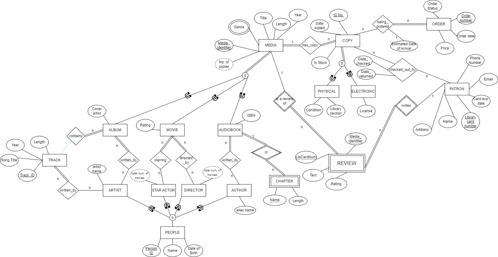
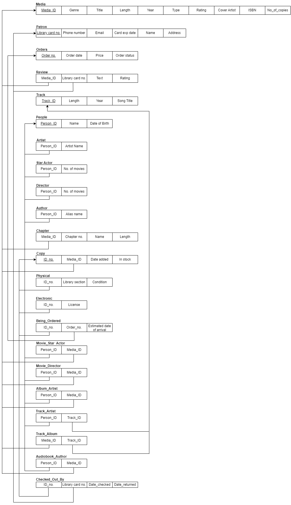
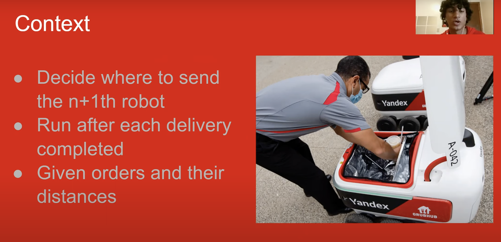

Data Engineering
The data structures and architecture from which valuable analytics are extracted are a key part of the insights pipeline. Without well-engineered database systems, data scientists, analysts, and strategists cannot do their jobs, an insight that I have learned first hand through both my academic and professional experiences.
Relational Database Management Project
 For the final project of my first database management course at Ohio State, myself and three other teammates were prompted to create a relational database management system for a theoretical library. This library had a variety of media that needed to be stored, managed, and updated in their database system, and also had a series of views and queries that would be desirable for their oragnization and patrons. We were given a prompt with extensive descriptions of the types of media and their attributes that would need to be stored, as well as the important tasks at hand for the library. Media entities included books, movies, albums, authors, artists, actors, and more, with many additional attributes describing the physical or electronic location and availability of each piece of media. We then went through the process of creating a database in SQL from scratch, starting with Entity Relationship Diagrams and a Relational Model, then moving into coding the create file, query files, view files, as well as coding a simple menu interface in Java for the new database with the help of a Java-SQL connection. The first image on this page is the Entity Relationship diabgram that my group created for the database creation problem at hand. As I've taken part in more data-related projects, I've realized how valuable doing such visual planning and modeling work is, even though it's perceived my many as tedious and insignificant. Creating a relational database that is purposefully planned, especially when considering the business questions and growth at hand, is essential for the long term use of a database system.
The most important part of this project was the extensive group discussions we had about the capabilities and structural necessities of the database we were setting out to create. Although SQL code is the catalyst for the creation of a database system, the planning, diagrammming, and modeling is the driving force of a database system's longevity and functionality. Without such organizational planning, essential features and relationships may be excluded, which has the potential to create serious problems for both data engineers and employees across the entire organization. This project also was a great learning experience in data engineering collaboration, which is significantly different from my experiences in collaborative software development projects. Due to the fact that we, as a team, were creating an entire database system, it was essential that we were all on the same page about our goals, and had effective methods of checks and balances to ensure each team member was on the right track. An error on the part of one member of the team could result in serious structural issues that may be difficult to uncover further along in the timeline of work. Effective communication, modeling, and planning, were essential factors in the success of this relational database project.
- To learn more about relational database management systems, click here.
- To learn more about entity relationship diagrams click here.
- To learn about relational models, click here.
Food Delivery Robot Optimization
 This was a project completed for Integrated Systems Engineering course 3230, Introduction to Optimization This was a course required for all data analytics majors to begin exploring how mathematical optimization models can be used to solve a variety of real-world problems, especially those in the supply chain and business management space. For our final project, teams were given the opportunity to chose any relevant optimization problem of their choice, investigate the parameters and constraints at hand, and create and solve an optimization function using Python and Gurobi optimization modeling tools.
This was a project completed for Integrated Systems Engineering course 3230, Introduction to Optimization This was a course required for all data analytics majors to begin exploring how mathematical optimization models can be used to solve a variety of real-world problems, especially those in the supply chain and business management space. For our final project, teams were given the opportunity to chose any relevant optimization problem of their choice, investigate the parameters and constraints at hand, and create and solve an optimization function using Python and Gurobi optimization modeling tools.
My team selected the problem space of on-campus food robot deliveries, which was new to Ohio State at the time. These robots replaced the need for delivery drivers, fulfilling all on-campus food establishment deliveries to all dorms on campus. Our team wanted to investigate if we could write an optimization funciton to minimize the time that these delivery robots waited at both food establishments and dorm drop-off spots. We collected and hand-coded several attributes into our data, ensuring that we had access to all of the distances between possible pickup and drop off locations. After significant theorization of what kind of constraints and parameters we should include, we settled on a final optimization function to inject into our Python script, and presented our findings and process to our class in a pre-recorded video format.
To see the GitHub repository for this project, click here.